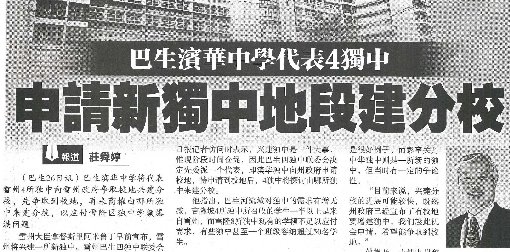
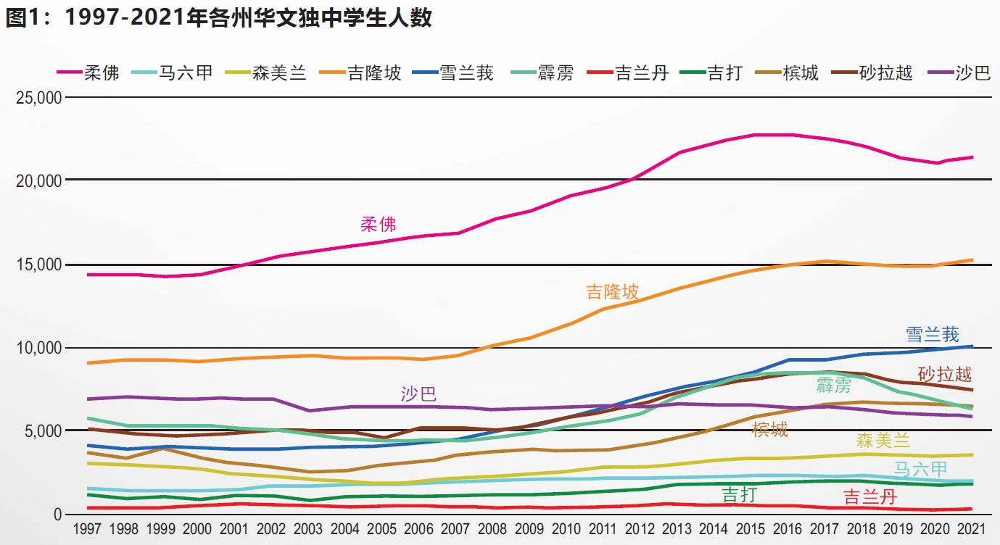
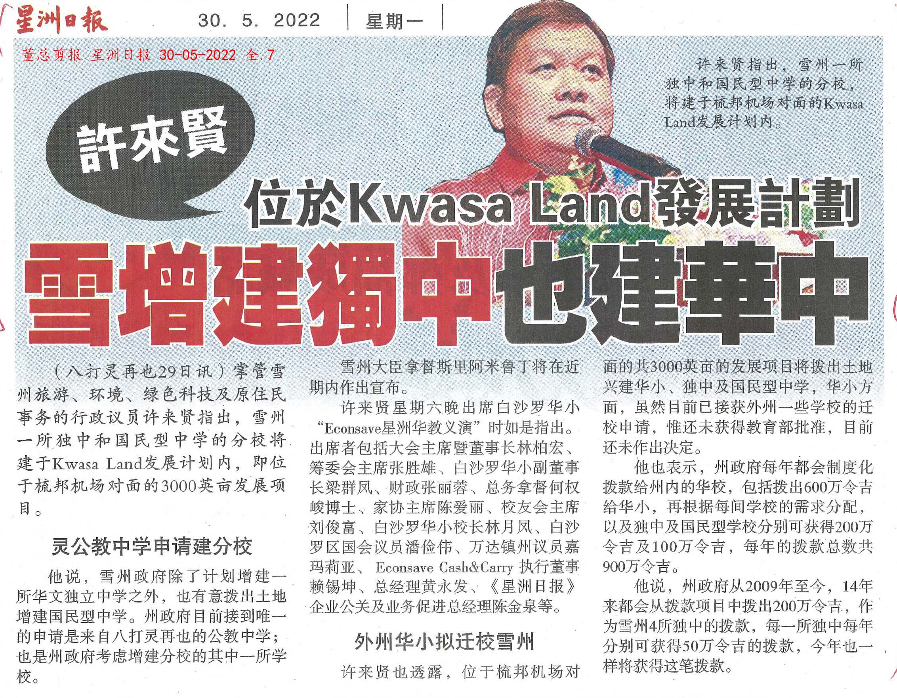

华社申办华文独中再露曙光——谈雪隆区申办华文独中
雪兰莪州务大臣拿督斯里阿米鲁丁于2022年2月14日出席一项新春晚宴时宣布，雪州将在近期增建一所华文独中。华社各界对此表示乐见其成。雪隆有8所华文独中，当中一些曾在过往提出申办分校的意愿，对大臣的宣布自是十分关注。在华社殷切的期盼下，雪州行政议员许来贤于5月29日指出，雪州增建的华文独中将建于Kwasa Land发展计划内位于梳邦机场对面共3千英亩的发展项目。遗憾的是，对于雪州的增建华文独中计划，教育部没有给予回应。
华文独立中学是民族母语教育体系的重要组成部分，是华裔子弟接受中等母语教育的重要堡垒。经历1960年代华文中学改制风暴的打击后，华文独中起初惨淡经营。1970年代华文独中复兴运动奠定了根基，华文独中奋发图强。1990年代推动迈向素质教育改革，独中生的杰出表现和良好品德素养，为华文独中奠下美好的声誉，赢得社会各界的肯定和信心。进入21世纪，华文独中迎向新挑战，开展另一波的教育改革。
1990年代至今，全国华文独中学生人数节节上升，更屡创新高，尤其是在柔佛、雪兰莪和吉隆坡，增加了许多学生(见图1)，对华文独中教育需求日渐增大。据调查，城市地区的华文独中学生爆满，校园和课室不足以应付，在校地空间不足的限制下，扩建校舍未能满足需求。因此，增建华文独中或兴建华文独中分校是最佳的解决途径。
雪隆区共有8所华文独中，即雪兰莪州4所，吉隆坡联邦直辖区4所。据董总调查所得，2021年，这8所华文独中学生人数占全国华文独中学生总数的31.4%，它们皆设立在华族人口密集区，缺乏进一步增设校舍的空间，学生人数已饱和，无法容纳更多学生（表1和表2）。校方为符合小班制的素质教育理念，只能严格控制收生人数，导致许多华裔子弟被拒于门槛之外。
表1：2010年、2015年及2017-2021年雪兰莪华文独中教育统计简表
| 年份 | 学校数量 | 学生人数 | 班级数量 | 平均每班学生密度 |
|---|---|---|---|---|
| 2010 | 4 | 5,777 | 140 | 41.3 |
| 2015 | 4 | 8,436 | 194 | 43.5 |
| 2017 | 4 | 9,219 | 212 | 43.5 |
| 2018 | 4 | 9,540 | 219 | 43.6 |
| 2019 | 4 | 9,654 | 216 | 44.7 |
| 2020 | 4 | 9,870 | 219 | 45.1 |
| 2019 | 4 | 10,060 | 223 | 45.1 |
表2：2010年、2015年及2017-2021年吉隆坡华文独中教育统计简表
| 年份 | 学校数量 | 学生人数 | 班级数量 | 平均每班学生密度 |
|---|---|---|---|---|
| 2010 | 4 | 11,378 | 233 | 48.8 |
| 2015 | 4 | 14,605 | 286 | 51.1 |
| 2017 | 4 | 15,165 | 291 | 52.1 |
| 2018 | 4 | 15,013 | 292 | 51.4 |
| 2019 | 4 | 14,907 | 297 | 50.2 |
| 2020 | 4 | 14,901 | 299 | 49.8 |
| 2019 | 4 | 15,219 | 339 | 44.9 |
扩建课室只是应急之举，无法从根本层面解决在城市地区华文独中学额供不应求的问题。增建一所全新的华文独中或以分校方式增建独中是解决根本问题的最佳方案，同时也符合华社的意愿和需求。在雪隆区，曾提出建分校的独中包括吉隆坡尊孔独中、吉隆坡中华独中和巴生滨华中学。
随着2022年2月14日雪州大臣许下增建一所华文独中的承诺，让雪隆区的独中办校者重燃希望，巴生四独中联委会即刻委派滨华中学代表四校，向州政府申请，让雪州大臣日前所宣布的新独中地段作为建设分校用途。基于2005年宽柔中学古来分校、2020年宽柔中学至达城分校相继启用，联邦政府理应批准雪隆区建华文独中分校的申请。希望各界做出努力，积极推动申办和兴建华文独中的工作。
雪隆区申办华文独中大事纪
- 2013年4月22日，董总针对第13届全国大选提出了5项华教议题的基本诉求和立场，包括提出在吉隆坡、雪兰莪和柔佛申办华文独中。
- 2017年8月29日，以董总名义向时任首相纳吉发函在加影申办一所华文独立中学。
- 2017年11月20日，时任教育部长马哈基尔在志期11月14日的国会书面答复中，回应行动党巴生国会议员查尔斯（Charles Anthony Santiago）质询时说，独中需维持在60所，增建新的华文独中将违反1996年教育法令。
- 2018年4月11日，七华团提呈“2018年马来西亚七华团教育备忘录”予时任首相纳吉，其中内容包括促请政府批准增建华文独中。
- 2018年8月2日，雪兰莪州行政议员许来贤向媒体指出，雪州政府已批准拨出两段校地给华社建两所新的华文独中，校地将落在八打灵或加影。
- 2022年2月14日，雪兰莪州大臣阿米鲁丁宣布，雪兰莪将在近期增建一所华文独立中学，他也保证，雪州有足够土地可以兴建独中。
- 2022年2月15日，雪兰莪州行政议员黄思汉向媒体指出，有关土地已在雪州城市规划中被注明为“兴建独中”，但并没有透露有关地段的实际位置与面积。
- 2022年2月26日，雪兰莪州巴生四独中联委会发表文告指出，该联委会2月25日议决，配合雪州政府拨地在州内增建一所新独中，将委派滨华中学代表四校向州政府申请雪兰莪州务大臣日前所宣布的新独中地段作为建设分校用途。一旦有关申请获批，联委会将进一步商榷具体建校模式与申请联邦政府的建校批文。
- 2022年3月9日，滨华中学董事长谢松坤透露，已致函雪兰莪州政府索取增建华文独中新校地资料包括新校地地点。
- 2022年4月16日，董教总华文独中工委会召开常务会议，一致通过对增建独中的立场是增建全新的华文独中或以分校模式增建独中。
- 2022年5月29日，雪州行政议员许来贤指出，位于梳邦机场对面共3千英亩的发展项目Kwasa Land发展计划，将拨出土地兴建华文独中。